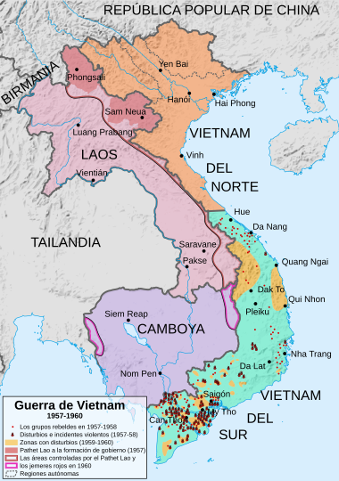
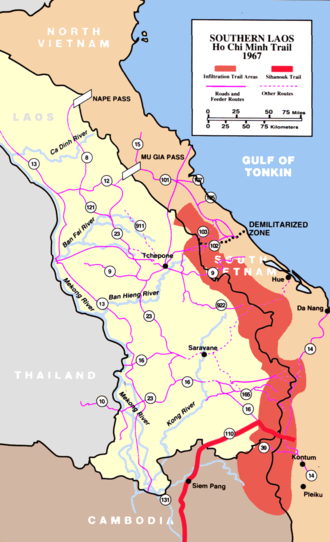

★引子
上个月发了一篇《从量变到质变——中美关系40年》，主要介绍：“中美关系”已经走向对抗，而且这种对抗在短期内【不会】改变。在那篇的末尾，俺也提到了：美国对付中国的策略，最有可能的就是效仿当年（冷战时）对付苏联的手法——也就是【遏制战略】。
今天写这篇有两个目的：一方面，大部分读者并不了解冷战时期美国所采用的遏制战略，这篇算是扫盲；另一方面，也是出于【以史为鉴】的考虑。
★背景——二战后的世界格局
要聊美国的冷战策略，先得介绍一下那会儿的时代背景——二战后的世界格局。
第二次世界大战把地球上很多地方变成废墟，二战前几个主要的工业发达国家，除了美国置身事外，其它几个（英、法、苏、德、日）都被重创。以欧洲为例，即使在二战结束2年后的1947年，整个欧洲的经济水平依然显著低于二战前（农业生产是1938年的83%，工业生产为88%，出口额仅为59%）。
作为二战时的盟友，美苏关系开始闹僵。双方的口水战开始增多——丘吉尔发表了“铁幕演说”，苏联的真理部不断宣称“帝国主义亡我之心不死”。
★二战后美国对苏战略的三种选择
当美苏关系逐渐破裂/恶化，当时的美国决策层对苏联的战略有三种选择。
◇选项1——重回“孤立主义”
二战前，主导美国外交界的是“孤立主义”。（所谓的“孤立主义”，通俗地说就是“管好自己的事情，不参与美洲以外的事务”）
即使像小罗斯福（富兰克林·罗斯福）那么强势的总统，在1941年之前，也不敢轻易卷入欧洲和亚洲的战事。一直等到1941年“日本偷袭珍珠港”之后，小罗斯福利用全国上下群情激愤，才正式宣战。
二战后，美国政坛的一些人又老调重谈，希望回到二战前那种孤立主义的态势。至于欧洲面临苏联的威胁，孤立主义者认为：欧洲的事情让欧洲人自己去解决。
◇选项2——对苏联进行“预防性军事打击”
与孤立主义相对的，是一些激进反共的人士。他们认为：希特勒能够在二战前不断坐大，就是因为英美等国犯了“绥靖主义”的错误。如今，面对苏联的坐大，不能再犯类似的错误了。这些人主张【先下手为强】，对苏联发动“预防性军事打击”。
持这种观点的人里面，就包括大名鼎鼎的巴顿将军——他在二战后就主张，重新武装若干德国师，以发动对苏战争。
不光军方有这类想法，政界也有。杜鲁门的特别助理克拉克·克利福德（Clark Clifford）在咨询了多方意见之后，向总统提交了一份“绝密报告”，其中提及了：战后苏联频频在欧亚地区进行扩张，美国应该暂缓从欧亚撤军和裁军，加强与英法等盟友的合作，寻找机会对苏联在东欧的驻军进行“预防性打击”，必要时可以攻击苏联本土。
◇选项3——用“联合国框架”拉拢苏联，以建立战后国际新秩序
前面说到的两种策略都【不是】美国政坛的主流观点。在二战后期，美国外交界的主流立场是由小罗斯福确立的“大国外交”。通俗地说就是：通过一个国际性组织（联合国）来协调大国关系，划分势力范围，以实现长久的世界和平。在这点上，小罗斯福很类似于一战后的美国总统伍德罗·威尔逊，威尔逊在一战后花很大力气建立了“国际联盟”（简称“国联”），也是为了达到同样目的。
比如说：二战后期大名鼎鼎的雅尔塔会议，美苏英三巨头（罗斯福、斯大林、丘吉尔）齐聚一堂，就是为了在全球范围内【重新】划分势力范围。
（雅尔塔三巨头）
◇小结
后来的历史进程说明：刚才聊的这3种战略选项都不太理想——
选项1：孤立主义
这种做法无疑会让苏联顺利扩张，如果美国不插手欧亚大陆的事务，不光西欧会被苏联奴役，连亚洲的日本和东南亚各国也将不保（被赤化）。
选项2：预防式军事打击
如果在二战刚结束就发动对苏战争，战争的规模【不会】亚于之前的“对德对日作战”，除了战争风险非常高，而且在美国国内也得不到民意支持——二战打了这么多年，刚打赢，美国民众都希望能过一段平静的生活。
选项3：大国外交
二战后美苏关系越来越僵，无疑也说明了小罗斯福企图建立的联合国框架，并不管用，问题很大。
就在美国外交界有点迷茫的时候，有个牛人（乔治·凯南）脱颖而出，指出了第4条道路。
★乔治·凯南——遏制战略之父
◇乔治·凯南其人
乔治·凯南，洋文全名是“George Frost Kennan”，1904年出生于威斯康星州的密尔沃基，1925年毕业于普林斯顿大学历史系，1926年进入外交界，1933年开始被派驻苏联。他精通多国语言（至少包括：俄语、德语），是美国外交界的“苏联通”。
但是在1946年之前，他还只是美国外交界一个默默无闻的小人物。

（乔治·凯南，摄于1947年）
◇一封电报，一举成名
1946年2月，美国财政部通过国务院转发了一封电报给驻莫斯科的大使馆，想了解苏联是否会加入“世界银行”及“国际货币基金组织”。那几天正好大使不在，凯南以“大使级代办”的身份回了一封【超长】的电报。这封电报全文8000多个单词，是美国建国以来驻外使领馆发给国务院的外交电文中，最长的一篇（没有之一）。后来研究冷战史的学者把这封电报称为《凯南长电》（Kennan's Long Telegram）。
美国务院收到电报后，当时的国务卿伯恩斯（James Byrnes）大加赞赏，要求在国务院内部传阅。不久之后，战争部（后来的“国防部”）和白宫也都看了这封电报。一时之间，整个华盛顿高层都在谈论凯南电报中提出的“遏制战略”。从那之后，凯南被誉为【遏制战略之父】。
那时候的美国军方一向看不起国务院系统（外交系统）的人。但凯南一举成名之后，海军部长亲自邀请凯南到新成立的“国家战争学院” （National War College）负责外交事务的教学工作。
才过了半年，新上任的国务卿马歇尔在国务院内成立了一个“政策计划署”（Policy Planning Staff，简称“PPS”），由凯南当第一任主任。这个 PPS 负责美国长期外交政策的制定（PPS 的办公室就在马歇尔办公室隔壁，足见马歇尔对该部门的重视）。
◇凯南的代表作——《苏联行为的根源》
担任 PPS 主任期间（1947年），凯南以“X先生”的署名在《外交》季刊发表了一篇文章，叫做《苏联行为的根源》。（因为这个署名，此文章也被称之为“X文章”）
如果说1946年的电报是他的成名作，那1947年的这篇文章就是他的代表作。这篇文章更加系统地阐述了苏共（苏联领导层）行事风格背后的根源，也强调了遏制战略的必要性。后面俺会具体聊到这篇文章的内容。
由于此文是【公开】发表，美国公众得以了解苏联的危险性以及美国政府的应对策略。“遏制战略”开始被公众所了解。
（注：凯南的这封电报和这篇文章，都已经上传到“俺的网盘”）。
★凯南的遏制战略
下面俺来聊一下：遏制苏联的战略到底是啥样子。
有必要提醒一句：虽然凯南是“遏制战略”它爹，但整个遏制战略的形成是经历了一个时间过程，参与该战略的构思、落实、执行的，也不可能仅仅是凯南一个人，而是涉及了很多美国行政机构里面的很多人。
◇对苏共行为模式的分析
在“凯南长电报”中分析了俄罗斯传统文化根深蒂固的【不安全感】，原文如下（粗体是俺标注滴）：
克里姆林宫对世界事务神经质的认知的最深处是俄罗斯传统的、本能的不安全感。起初，这种不安全感，产生于一个和平地生活在广袤而无法设防的平原上的农作居民与一群凶暴的游牧民为邻的结果。最近的这场战争（苏德战争），由于俄罗斯人打交道的是经济发达的西方人，使得（俄罗斯人）对地区内出现较之以前更强大、更发达、组织更严密的社会产生新的恐惧。但是，这种新的不安全感与其说是在折磨着一般俄罗斯民众，毋宁说是在折磨着俄国的统治者。这是因为，俄罗斯统治者无疑感觉到，他们的统治是一个形式上相对无序的统治，其心理基础脆弱而且虚假，无法与西方国家的政治制度相提并论。因此，他们一向惧怕来自外部的渗透，惧怕与西方世界直接接触，对一旦俄罗斯人民了解了外部世界的真相或是外国人民了解了俄罗斯内部的真相所可能带来的后果担忧不已。结果，为了求得安全，他们学会的只是如何彻底地置对手于死地的方法，从没考虑与对手建立契约和妥协。
马克思主义在西欧传播了半个世纪毫无建树，但在俄罗斯却能星火燎原、一举成功，这绝非偶然。只有在这样一个从未拥有过和睦的邻邦，甚或在其内部和外部也从未产生过得以容忍的力量均衡的国土上，一个崇尚社会间的经济冲突是无法通过和平手段解决的学说的民族中，马克思主义才能得以发扬。自建立了布尔什维克政权之后，由于列宁的诠释，马克斯的教义变得更加凶狠好斗，更具排他性，成为激发不安全感的无与伦比的动力。正因为此，那些布尔什维克统治者们对不安全的感受，要比俄罗斯历史上的任何统治者都要强烈得多。也正是在这种教义所寓含的利他主义的内涵中，他们找到了本能地惧怕外部世界的正当理由，找到了除了独裁而不知如何统治的根据，找到了没有他们不敢实践的残暴的因由，也找到了他们要求别人作出牺牲的根据。正是以马克思主义的名义，他们的所作所为荡涤了哪怕只是一个细微的伦理价值。今天，他们已经离不开这样一个教义了，因为这个教义已经成为他们在道德与思辨上让别人不得不倾倒的遮羞布。
......
苏联领导人迫于历史和现状的实际需要，就提出一种教条，把外部世界描绘成为一个罪恶的、敌视的、威胁着苏联的世界，并认为这个世界内部滋生着蔓延疾病的细菌，注定要被越来越多的内部骚动所破坏，最后难逃蒸蒸日上的社会主义理论的致命一击，从而让位给一个新的、更美好的世界。这种论点为苏联扩充国家警察与军事力量提供了依据，为将俄罗斯人民与外部世界隔离提供了理由，为完全体现俄罗斯统治者本能和特性的不断扩大警察权限的压力提供了正当性。
在《苏联行为的根源》一文，凯南提到（粗体是俺标注滴）：
这些苏维埃头子的脑袋瓜天生就认定：无论如何，只要是反对势力就不可以公开承认它有什么优点或正当性。而这种反对势力的源头，绝对是不可救药、奄奄一息的资本主义。只要公开承认资本主义仍存在于俄国，就能以此作为借口，实施独裁。但是，当资本主义余毒被逐渐清除之后，独裁的正当性就消失了，在官方宣称完全铲除国内资本余毒之时，独裁也必须跟着消失。而且，既然国内已无资本主义余毒，当然就更不能承认被解放的人民对克里姆林宫有自发性的严重反抗行为。所以，苏维埃政权必须将矛头指向国外的资本主义威胁，才能继续独裁。
◇对“大国外交”战略的批判
基于上述对苏共的心理分析，凯南认为：小罗斯福推行的“大国外交”战略，对苏联是无效滴。原因至少包括：
其一，由于苏共领导层根深蒂固的不安全感，二战结束后，美苏关系必然迅速恶化（二战期间美苏的“盟友”关系，只是苏共对付纳粹的【临时】权宜之计）。
其二，苏共为了降低这种不安全感，只有选择【持续】对外扩张。因此，美国想要与苏联划定“势力范围”必然是徒劳的。
◇遏制战略的目标
采用各种方式逐步【软化】苏联，最终迫使苏联政权垮台。
早在40年代末的一份报告中，凯南就写下了如下这段话（很有先见之明）：
美国所拥有的力量，足以让束缚苏联的索套慢慢收紧，足以让克里姆林宫做出以前从未做过的改变，足以在各种策略的作用下推动苏共政权走向分裂或崩溃。（看到这里，聪明的读者马上会意识到——本文的标题就出自凯南的这句话）
◇实施遏制战略的3个步骤（凯南三部曲）
在凯南最初的构想中提到如下3个步骤：
步骤1——重新恢复【势力均衡】
由于二战的惨烈，“英/法/德/日”等国要么被重创，要么原政权已经消失。很多地区处于“地缘政治真空”。美国必须尽快恢复这些地区的势力均衡。以免被苏联乘虚而入。
根据优先级，首先要恢复【均势】的是欧洲，其次是东亚。为啥捏？凯南认为当时全球有5个重要的工业中心，分别是【美国、苏联、英国、德国、日本】。美国必须确保“英国、德国（西德）、日本”不被苏联染指。
在援助的【方式】上，凯南认为：【经济】援助优于军事援助。因为经济持续低迷，这几个国家的共产党势力就会膨胀；反之，如果经济繁荣，民众生活水平提升，当地共产党自然就慢慢消亡。以下摘自他的长篇电报：
世界共产主义就像是一种恶性的寄生虫，只会发生在生了病的肌肤组织上生存。在这一点上，国内和对外政策便交织在一起。每一个能够解决我们自身社会问题（的政策），每一个可以提升我们自己人民的自信心、纪律性、士气和集体精神的勇敢而坚定的举动，都是针对苏联的一个外交胜利。
步骤2——【弱化】苏联对国际事物的影响力
要弱化苏联的国际影响力，首先要弱化苏联对其它共产党国家的影响力。
要如何做到这点捏？凯南有一个“四两拨千斤”的招数——【不要】正面地去打击和消灭共产党国家的政权，而要想办法【离间】它们与苏联的关系。这样可以用很小的代价获得很好的效果。
在1948年国务院 PPS 的一份政策分析报告中，凯南提到如下：
俄罗斯以外的共产党团体在极力效仿和追随莫斯科的教义时，总是感到困难重重。克里姆林宫的领导人总是那么漠视他人，总是那么不留情面，总是那么傲慢专横；对其追随者的约束又是那么残酷严厉。几乎没有谁能够长期忍受莫斯科的威权。除了上述这段论述，凯南还准确预见到了——有三个国家的共产党最有可能与莫斯科闹翻，分别是：【南斯拉夫、中国、希腊】。后来的历史发展确实如此。除了上述三个，还有其它一些共产党国家也与莫斯科翻脸，包括：阿尔巴尼亚、罗马尼亚、匈牙利、捷克斯洛伐克......
......
即使某国共产党在夺取政权的过程中不得不遵循莫斯科的教义和学说，以获得莫斯科在政治或军事上的支持；但在夺取政权之后，对苏联的依赖程度将大大减少。
......
一旦这些共产党的领导人变成国家的头面人物，一种新的、微妙的力量将开始发生作用。权力，哪怕只是品尝一丁点儿，同样会对共产党人发生腐蚀作用。特别是当这些领导人的个人利益或民族主义不断膨胀时，与苏联的分歧和冲突将难以避免。
步骤3——迫使苏联接受【以谈判解决外部冲突】的方式
凯南认为：莫斯科的行事方式在短期内是难以改变的；但美国经过长期努力可以改变苏联的做事风格。为了达到这个目的，凯南提出：“威慑”（deterrence）与“诱导”（inducement）两者配合的方式。
所谓的“威慑”就是：让莫斯科方面意识到，某些行为是不能做滴（一旦做了，对莫斯科会有严重后果）。“威慑”的关键是——先对某事展示出【足够强】的报复能力。对方在做此事之前就会三思而行。
所谓的“诱导”就是：美国要给莫斯科留一条出路，这条路是美方所期望的；同时也要让莫斯科通过利弊分析之后意识到——走这条路才是对莫斯科最有利的选择。
经过长期运用“威慑与胁迫”，最终让莫斯科【主动】坐到谈判桌上来。（对美方而言）后面的事情就好办了。
◇小结
从凯南对战略的思考，可以看出此人善于玩“间接路线战略”（或者叫“迂回战略”）。但是在凯南的后继者中，有很多人并不理解他的这种“迂回达到目的”的招数。
对这个话题感兴趣的同学，俺推荐知名的军事战略理论家李德·哈特的代表作《战略论——间接路线》（此书在多年前就已经分享到俺的网盘）
★“凯南遏制战略”的后续影响
◇直接影响——对盟友的经济援助
对欧洲的援助——马歇尔计划
如今所说的“The Marshall Plan”是【俗称】，正式的官方名称是“欧洲复兴计划”（European Recovery Program）。虽然这个计划冠以马歇尔的名头，但主要策划者是前面提到的凯南以及威廉·克莱顿（助理国务卿）。
该计划于1947年7月间正式启动，并持续了4个财政年度。在这段时期内，西欧各国获得美国各种形式的援助（包括：金融、技术、设备），合计130亿美元。（根据通货膨胀率进行折算，这笔援助相当于2006年的1300亿美元）
靠着“马歇尔计划”，西欧各国（除了西德）经济得以在4年内快速恢复到战前水平。
（欧洲各国接受的美援，柱状代表金额的相对大小）
马歇尔计划还催生了“欧洲经合组织（OECC）”。当初成立该组织是为了执行“欧洲重建计划”。马歇尔计划完成后，该组织演变为“经济合作发展组织”（经合组织，OECD），其成员国【不限于】欧洲。利用 OECD，美国可以帮成员国发展经济，以对抗苏联阵营的“赤化”。
对中华民国（台湾）的经济援助
从1951年到1965年，中华民国每年可以从美国那里得到大约一亿美元的贷款。另外还有各种战略物资和基础建设所需的物资。
这些经济援助对蒋光头在台湾站稳脚跟，意义重大。
（美国对台援助的 LOGO）
◇间接影响——基辛格拉拢中国
美国外交界大佬基辛格在相当程度上受了凯南的影响（俺记得凯南去世那会儿，基辛格还写了一篇纪念文章，评价相当高）
刚才提到了凯南战略中“如何削弱苏联的影响”，俺重复唠叨一遍：
【不要】正面地去打击和消灭共产党国家的政权，而要想办法【离间】它们与苏联的关系。这样可以用很小的代价获得很好的效果。
在《从量变到质变——中美关系40年》一文的开头，俺曾经聊到一个故事：苏联企图对中国进行核打击，而美国故意把消息透露给中共。当时美国国务卿就是基辛格，他这么干就是在践行凯南的战略思想——离间共产党国家与苏联的关系。（此故事的链接在“这里”。为了避免五毛来抬杠，俺特意引用了中共喉舌“人民网”的链接）
后来的尼克松访华，也是基辛格促成的——当时他先在1971年秘密访华，为尼克松打前站。
★NSC-68 号文件——从“有限遏制”到“全面遏制”
NSC68 是以“国家安全委员会”（NSC）的名义发布的一份【综合战略报告】，负责起草该报告的是保罗·尼兹（Paul Nitze）。在马歇尔退休之后，新任国务卿艾奇逊任命此人接替乔治·凯南担任国务院 PPS（政策计划署）的主任。
该文件的出台标志着美国战略的一次调整（从“有限遏制”转向“全面遏制”）。
◇出台 NSC-68 的背景
导致该报告出台的因素有很多，但俺认为最要的因素是如下两个：
1. 1949年8月，苏联试验原子弹成功
这不但打破了美国的【核垄断】，而且对美国决策层造成很大震动。在苏联试爆原子弹之前，美国情报界认为：苏联至少要到50年代中期才能够搞出原子弹。苏联在核武方面进展如此神速，首先就极大刺激了美国军方。
2. 1949年，中国大陆沦陷
当时麦卡锡主义盛行，身为共和党的麦卡锡指责民主党的杜鲁门总统反共不力（麦卡锡甚至怀疑杜鲁门政府高层就有亲共的赤色分子）。所以杜鲁门急需发布一份立场强硬的、反共反苏的综合战略报告。
◇NSC-68 的要点
整个报告很长，限于篇幅，俺无法详述，只能简单聊聊其中的要点。
该报告把“美/苏”的对立上升到【意识形态】的高度，强调苏联的威胁是【全方位】的。报告认为：在掌握核武之后，苏联有可能【率先】发动对自由世界的军事打击。因此，美国对苏联的遏制必须提升为【全方位遏制】。
为了达到全面遏制，报告提出了如下几个目标：
1. 在自由世界的国家内部建立起有效运作的政治和经济体制，以反击苏联的政治攻势；
2. 在向自由世界的国家提供政治和经济援助的同时，必须给予充分的军事保护；
3. 美国要在全球范围内建立起遏制苏联扩张的军事威慑力量；
4. 美国必须立即构建一个能够击败苏联有限或全面侵略的武装力量。
◇NSC-68 与凯南战略思想的差异
NSC68 大体上继承了凯南的思路，两者的差异在于：
1. 凯南出于成本和风险的考虑，尽量避免使用军事手段，而更愿意使用其它手段（比如：政治、经济、文化、宗教...）；而 NSC68 把军事手段放到首要位置。比如凯南就反对搞“军事同盟”，而 NSC68 出台之后，美国搞了一堆军事同盟。
2. 凯南认为苏联不会率先对美国进行军事打击；而 NSC68 认为苏联有可能这么干。
由于这些理念的差异，凯南从1950年之后就被边缘化了。他后来去普林斯顿教书，著作等身。这家伙一直活到21世纪（101岁），亲眼看到苏联散架的全过程。
★NSC-68 号文件的后续影响
◇为了在【战略】武器上压倒苏联，开启了“核军备竞赛”
首先看如下这张趋势图。美国核武数的猛增，发生在1955~1965年间；核武数量对苏联的优势一直保持到1975年。而这些，无疑是 NSC68 报告的直接后果。
至于苏联核武数的变化趋势，待会儿俺再来介绍。
（美苏核武数量的变化趋势，摘自维基百科）
（1946年，美国在比基尼环礁进行水下核试验——代号“十字路口行动”）
（1954年，美国在比基尼环礁进行氢弹试验——代号“城堡行动”）
顺便扫盲一个小知识：
为啥“三点式泳装”称作“比基尼泳装”？
因为当“三点式泳装”首次出现时，美国报刊称：该泳装产生的震撼效果超过比基尼岛的核弹。由此得名。
◇从“核军备竞赛”到“核恐怖平衡”
美苏一旦开启“核竞赛”，最后自然发展成“核恐怖平衡”。所谓“核恐怖平衡”，就是双方都积累了足够【数量】、足够【多样化】的核武器，以做到【确保相互毁灭】（洋文叫做“Mutual Assured Destruction”，简称 MAD）。通俗地说：即使对方先动手摧毁了自己的大部分核力量，自己依然可以用剩余的少部分核力量进行反击（第二次打击），并把对方也摧毁。
（注：关于“确保相互毁灭”的详细介绍，可以参见《聊聊“核战略的博弈模型”与“中美新冷战”》）
为了做到【多样化】，美苏后来都发展出号称“三位一体”的核打击体系。所谓“三位一体”包括：
位于发射井的战略导弹以及车载战略导弹（陆基）
通过战略核潜艇发射的战略导弹（海基）
通过战略轰炸机发射的战略导弹（空基）
◇为了全面围堵苏联，打造了 N 个军事同盟
下面俺根据时间排序，简单列举美国佬建立的军事同盟。
北大西洋公约组织（北约，NATO）
为了遏制苏联而建立的国际组织，最有名的大概就是“北约”了。
该组织由“美、英、法”牵头，成立于1949年，同年发表了《北大西洋公约》。（注：NSC-68 也是在这一年开始筹划的）
北约初始成员国12个，之后不断增加。以下的 GIF 动画演示了北约在不同年份的扩张。

（北约扩张的【动态】示意图）
经过多年扩张，目前（2018）北约包含29个成员国，北约军费开支占全球 70% 左右。
根据《北大西洋公约》第5条规定：成员国受到的攻击一旦被确认，其它所有成员国将作出即时反应。该条款被理解为：各国部队将自动参战，无需各国政府的参战授权。
太平洋安全保障条约（ANZUS）
这个条约又称“澳新美安全条约”，成立于1951年，一直存活至今。
条约规定：若任一方认为自己在太平洋地区的领土完整、政治独立或安全受到威胁时，各方将一同协助。
美日安保条约
历史上有两个“美日安保条约”，旧的那个签署于1951年，新的签署于1960年。通过该条约建立“美日军事同盟”。
该条约规定：
缔约国的每一方都认识到：对在日本管理下的领土上的任何一方所发动的武装进攻都会危及它本国的和平和安全，并且宣布它将按照自己的宪法规定和程序采取行动以应付共同的危险。
顺便跑题一下：
2014年，美国总统奥巴马访日，美日双方发表联合声明称：
《美日安保条约》包括尖阁诸岛（钓鱼岛及附属岛屿）在内，适用于所有处于日本施政权之下的区域。
很显然，这个联合声明是说给中国听的。
（驻日美军基地分布图）
（横须贺军港——第七舰队总部）
美韩共同防御条约
1953年韩战停战之后签署的条约，以建立“美韩军事同盟”。
根据此条约，韩美任何一方在亚太地区受到攻击，另一方都给予军事援助。所以后来的越战，韩国也派去了很多部队。
另外，韩美联合军司令部的司令必须由驻韩美军司令兼任。所以韩国部队的指挥权实际上掌握在美国佬手中。
中美共同防御条约
该签署于1954年，目的是协防台湾。
签署该条约的背景是：中共在1954年发布《解放台湾共同宣言》。当时韩战已经结束（停战），美方担心中共会重新策划渡海攻台。
美国与天朝建交之后，该条约被《台湾关系法》取代。
东南亚条约组织（东约，SEATO）
该组织在1954年成立，由《马尼拉条约》演变而来。成员国包括：美国、英国、法国、巴基斯坦（含孟加拉国）、泰国、菲律宾、澳大利亚、新西兰。“南越、柬埔寨、老挝王国”三国由于要遵守1954年的《日内瓦协议》而没有加入，不过它们仨受到该组织的军事保护。
你可以把这个组织理解为“东南亚版”的北约。美国发起“东约”是因为——共产党已经统治了北越并随时准备南下；中共也在积极向东南亚“输出革命”。
可能有的同学会奇怪——为啥法国和英国也掺和进来？因为印支那地区曾经是法国殖民地，南亚次大陆曾经是英国殖民地。至于澳大利亚和新西兰为啥也加进来？是因为美国想要在“东约”的基础上打造一个“西太平洋防御体系”。所以把前面提到的 ANZUS 的成员国也拉进“东约”。
中东条约组织（CENTO）
该组织成立于1955年，由《巴格达公约》演变而来。成员国包括：伊朗、伊拉克、土耳其、巴基斯坦；美国和英国以“观察员”身份参与该组织。
这个组织相当于“中东版”的北约。1979年，伊朗发生“伊斯兰革命”之后，该组织解散。
◇为了在经济上围堵苏联，成立了巴黎统筹委员会（巴统，CoCom）
该组织成立于1950年，正式名称是“输出管制统筹委员会”。
成立该组织是为了限制对共产党国家的出口，防止共产党国家获得高科技产品和尖端技术。
该委员会下设两个执行机构：一个负责对苏联和东欧国家的禁运，另一个负责对中国的禁运。
★二十年越南战争——美国从主动变被动
聊美苏冷战，越战是一个绕不过去的话题。下面就来谈一下越战对美国战略的影响。
◇多米诺骨牌的迷思
1952年杜鲁门卸任，接替他的是艾森豪威尔（二战期间欧洲盟军总司令）。艾森豪威尔提出了一个“多米诺骨牌理论”——如果越南被赤化，就会引发连锁反应，导致周边的“老挝、柬埔寨、泰国、马来亚”纷纷倒向共产党阵营。所以艾森豪威尔认为：要竭尽全力阻止越南赤化。
这个理论是后来美国卷入越战并越陷越深的根源。
（“多米诺骨牌理论”的示意图）
◇越战的几个阶段
越战从1955年一直打到1975年，将近20年。如果以美国的视角，大致可以分为如下几个阶段：
1955~1960
艾森豪威尔时期，美国在南越只派驻少量（几百人）的军事顾问。
1961~1963
肯尼迪时期，美方进行“特种作战”，派驻越南的作战人员达到几万人，主要对付南方的“越共游击队”。
1964~1968
约翰逊时期，以“北部湾事件”为转折点，战争升级。美军与北越人民军正面对抗，驻南越美军增至47万。
1969~1973
尼克松时期，美军开始逐步撤军。
1974~1975
美军撤离之后，南越在2年内崩溃。
|  （1957~1960年的越南局势图，南方有很多游击区） |  （大名鼎鼎的“胡志明小道”，位于越南与老挝国界线） |
◇凯南的先见之明
这时候，你再回过头去看【凯南三部曲】的第2个步骤，就能感受到这家伙的先见之明。
当肯尼迪开始在越南进行“特种作战”的那会儿（60年代初），中苏关系已经开始恶化了。如果美国佬把顺序调换一下：先拉拢中国，再介入越南，那越战的局面将完全不同——
当50年代末中苏开始论战时，越南是站在苏联那边（这时“中/越”的关系已经有了隔阂）。倘若中国在60年代就与美国讲和，“中/越”关系将会更早恶化（或许60年代就恶化）。如此一来，当美国驻军南越，北越将面临【双线压力】——不得不分兵到南北两线。
★尼克松的战略调整
尼克松在1969年上台时，美国在越战中已经陷得很深。为了应对当时美国的被动局面，尼克松作了若干战略调整。
◇中美破冰
尼克松在冷战期间意义最深远的举动，就是这个“中美破冰”了。整个破冰的过程，基辛格是主要操盘手。关于这事儿，刚才俺已经稍微提到了。
这事儿之所以能成，关键是中美双方当时都处于困境，正好可以借助此事来脱困。所以双方一拍即合。
美国的困境是因为多年深陷越战泥潭，军事上、经济上、舆论上都被动；如果能把中国拉过来，冷战的天平就会再度朝美国倾斜。
中国的困境一方面是外交上长期很孤立（自从与苏联翻脸，东西方阵营都不讨好），另一方面是刚刚发生的林彪913事件重创了毛腊肉的个人形象（要知道，林秃子那可是毛腊肉的【钦定接班人】哦）；对中共而言，中美破冰既可以摆脱外交孤立，又可以用来吹捧毛腊肉。
（中美关系解冻的标志性画面）
◇从越南撤军
尼克松1969年入主白宫后就一直想与北越谈判，北越方面一开始不想跟美国佬谈。但1972年发生两件事情，让北越方面坐到谈判桌边。
其一是刚才聊的“中美破冰”，天朝开始站到美国阵营这边，于是就向北越施加压力（天朝给了北越很多援助，说话还是有点分量滴）
其二是北越在那年发动了规模浩大的“复活节攻势”，几乎是顷全国兵力，企图一举打垮南越。作为反击，美国佬动用大名鼎鼎的 B-52 轰炸机（绰号“同温层堡垒”）对北越大城市和各个军事设施进行战略轰炸。最终，北越的“复活节攻势”被击退，北越人民军方面损失超过10万人，人民军司令武元甲被撤职。
经历了1972年的这两件事情，越共终于同意跟美国佬进行和谈，并在1973年签了《巴黎和平协约》。同年，美国兵全部撤离南越（只留少数海军陆战队保卫使领馆）
◇新亚洲政策——从东约到东盟
关于“东约”的情况，前面已经聊过了。
尼克松在入主白宫后不久（1969），于关岛发表了一项声明，提出“亚洲事务的亚洲化”（史称“新亚洲政策”，也称“关岛主义”）。这项声明标志着美国开始调整东南亚政策。所谓“亚洲事务的亚洲化”，就是说：对于东南亚【国内】的共产势力，由各国自行解决。只有当东南亚遭遇【外部】共产势力入侵，美国再插手。如此一来，可以减轻美国在东南亚的包袱。
从那之后，“东约”的作用开始被淡化，其作用被“东盟”替代。1977年，“东约”正式解散。“东盟”和“东约”的差别在于——“东盟”是由东南亚各国自行组织，美国不参与。
“东盟”名义上成立于1961年，但真正有效运作是开始于1967年（那年发表了《东盟宣言》）。初始成员国包括：印尼、菲律宾、泰国、马来西亚、新加坡。后来又增加了若干成员国。
对于“东盟”，大伙儿应该比较熟悉了。但很多人或许不知道——当初成立“东盟”是为了建立一个【反共同盟】，以应对红色中国的威胁。
话说毛腊肉当政的那些年，咱们天朝整天叫嚣着【红旗插遍全球】。为了实现这个宏伟理想，中共花了很大力气对东南亚进行【输出革命】，甚至还在广西和云南搞了若干个【游击战训练营】，以培训游击战骨干。比如红色高棉（柬共、赤柬）最开始的那批领导人，基本上都在中国南方受训过（具体参见《最“纯正”的共产主义政权——红色高棉简史》）
那些年，马来西亚有“马共”（领导人是陈平、福建人），柬埔寨有“柬共”（领导人是波尔布特），菲律宾有“菲共”（领导人是何塞·西松），泰国有“泰共”（泰共干脆把官方电台直接设在云南省）......几乎每个东南亚国家都被这些共党游击队搞得鸡飞狗跳。
（1975年，中共支持的红色高棉攻占首都金边，柬共领导层合影）
以上这些，就是“东盟”成立的背景。冷战结束后，“东盟”从政治组织转型为经济组织。
★十年阿富汗战争——苏联从主动变被动
◇苏联入侵阿富汗——越战的翻版
历史有时候很讽刺——1973年，美国佬狼狈撤出越南。仅仅过了6年，俄国佬就重蹈覆辙，卷入阿富汗战争。
阿富汗战争与越战有很多相似之处——
美国是超级大国；苏联也是超级大国。
美国认为越南不堪一击；苏联也认为阿富汗不堪一击。
越南战争打得旷日持久；阿富汗战争也打得旷日持久。
美国打越南的时候，苏联大力资助越共游击队；苏联打阿富汗的时候，美国大力资助圣战游击队。
美国最后不得不狼狈地从越南撤军；苏联最后不得不狼狈地从阿富汗撤军。
正因为这两场战争如何类似，以至于某些评论文章把“苏联入侵阿富汗”称作“苏联的越战”。
（苏军入侵示意图）
（北极熊的钢铁洪流涌入阿富汗）
◇毒刺导弹——阿富汗战争的转折点
由于阿富汗的地理环境极其恶劣，大部分地区，坦克根本用不上。所以在阿富汗战争的大部分时间，苏军使用“母鹿直升机”（型号是“Mil Mi-24”，Hind 是北约对它的代号）对付圣战游击队。这款直升机的装甲（尤其是底板）很厚，阿富汗游击队拿它没办法（用机枪都打不穿底板）。因此，这款直升机被入侵阿富汗的苏军称之为“飞行战车”，而圣战游击队称之为“撒旦战车”。
到了1986年9月，美国开始向圣战游击队大量供应毒刺导弹（全称是“FIM-92毒刺便携式防空导弹”），据说给了500具。战局一下子就被逆转——大量的母鹿直升机被游击队击落。俺记得那会儿，圣战游击队开了一个新闻发布会，他们的发言人说：
7年来，龙统治着天空。今天，龙死了。
一方面是战局不利，另一方面是苏联的国库空虚（为啥国库空虚，待会儿介绍）。所以，一年半之后，苏军开始撤出阿富汗。
（使用肩扛式“毒刺导弹”的圣战者）
（被游击队击落的“直升机”。注：经热心网友反馈，照片中的直升机【不是】“Mi-24”母鹿，而是“Mi-8”运输直升机）
★罗纳德·里根——冷战的终结者
虽然苏联解体发生在老布什的任期内，但通常都把里根视作【冷战终结者】。
里根是在1989年1月20日卸任总统，而共产党阵营的【第一块多米诺骨牌】是在1989年6月4日倒下（波兰共产党垮台），此时距离里根卸任才只有不到半年。
◇里根的超强硬作风
1980年，里根当选总统，1984年连任。历数冷战期间的美国总统（从杜鲁门到老布什），里根是最强硬的（没有之一）。
他是第一个公开宣称苏联为【邪恶帝国】的总统，并且多次在公开场合宣称：共产运动终将失败。顺手放几条他的名言：
迈向自由和民主的过程将把马列主义留在历史的垃圾堆里。
The march of freedom and democracy which will leave Marxism-Leninism on the ash-heap of history.
苏联是一个邪恶的帝国，苏联共产主义是现代世界的邪恶焦点。
The Soviet Union is an Evil Empire, and Soviet communism is the focus of evil in the modern world.
如何判断什么样的人是共产主义者捏？共产主义者就是那些【阅读】了马克思和列宁著作的人；
那么，什么样的人是反共产主义者捏？反共产主义者是那些【理解】了马克思和列宁著作的人。
How do you tell a communist? Well, it's someone who reads Marx and Lenin.
And how do you tell an anti-communist? It's someone who understands Marx and Lenin.
讽刺的是，卡尔·马克思是对的。我们今天目睹了巨大的颠覆性的危机——一个经济秩序直接和政治秩序互相冲突的危机。
但这个危机并不是发生在西方自由国家，而是发生在马列主义的老家——苏联。
In an ironic sense, Karl Marx was right. We are witnessing today a great revolutionary crisis –– a crisis where the demands of the economic order are colliding directly with those of the political order.
But the crisis is happening not in the free, non-Marxist West, but in the home of Marxism-Leninism, the Soviet Union.
◇里根经济学——美国经济强势反弹
里根刚上台不久，面对的是糟糕的美国经济——高失业 ＆ 高通胀（通货膨胀率达到两位数）。
他采用两种手段（“降低货币供应”和“全面减税”）来刺激商业投资，这种做法在美国历史上是【没有】先例滴，里根的政治对手嘲笑他的做法是“里根经济学、巫毒经济学”。
但到了1983年，这套政策真的起效了——经济开始强势反弹（反弹一直持续里根卸任之后），并且通胀和失业率都显著降低。
◇里根总统与撒切尔首相
说到这里，就不得不提一下80年代的英国首相撒切尔夫人。她与里根的任期大致重叠，两人都具有“自由意志主义”的倾向，两人都主张小政府和减税，两人对经济都持“自由放任”的态度，两人都极端反共......
（里根与撒切尔夫人在戴维营）
为啥这两人如此相似捏？有一种说法是——他俩都是哈耶克的信徒。
看到这里，如果你对哈耶克感兴趣的话，可以去看看他的两部作品，一部是他的代表作《通往奴役之路》，另一部是他晚年的集大成之作《致命的自负——社会主义的谬误》。（“俺的网盘”分享了电子版）
（弗里德里希·哈耶克）
★里根的 NSDD-32 战略——对苏联的致命一击
◇NSDD-32 国家安全战略
刚才提到：里根的策略使得美国经济强势反弹。在这种的情况下，里根发布这个 NSDD-32 国安战略，才有了足够的底气。
NSDD 是洋文“National Security Decisions Directive”的缩写。这个《NSDD-32号文件》包括三个要点：
1. 经济上——减少苏联获取高科技技术的机会并减少其资源，包括压低苏联商品在国际市场上的价格；
2. 军事上——增加美国的军事支出以强化美国的谈判地位，并迫使苏联转移更多经济资源至军事用途上；
3. 外交上——大力支援全世界的反苏势力，从阿富汗的圣战游击队到波兰的团结工会运动，都是支援的对象。
◇星球大战计划——打破美苏战略平衡
“星球大战计划”的正式名称是“主动战略防御”（SDI / Strategic Defense Initiative）。通俗地说就是：美方在太空中部属激光武器，在来袭的洲际导弹重返大气层之前摧毁它。
关于“星球大战计划”，长期存在两种说法——
官方说法是：由于后来冷战终结，加上该计划的科研费用超高，所以很多研究项目在90年代终止。
但民间一直流传另一种说法：“星战计划”纯属骗局（俗称“战略忽悠”），以便让苏联入套，从而拖垮苏联经济。
不管哪一种说法属实，这个计划确实让苏共高层非常恐慌。苏共担心：美国一旦建起了洲际导弹防御网，使得苏联的战略导弹打不到美国，而美国的战略导弹依然能打到苏联。那“核恐怖平衡”就被打破了。
（1983年3月，里根在电视上宣布“星球大战计划”开始实施）
◇潘兴2战术导弹——悬在莫斯科头上的“达摩克利斯之剑”
上世纪80年代初，美国开始在西德大规模部属“潘兴2”。虽然这只是一款【战术】导弹，却对莫斯科造成很大恐慌。
该导弹的技术指标如下：
| 射程 | 1770公里 |
| 精度 | 误差40米 （相对其射程，算是超高的精度） |
| 飞行速度 | 8~12马赫 |
| 飞行高度 | 约300公里 |
| 发射准备时间 | 约5分钟 |
| 核弹头类型 | 空爆 钻地爆（钻地深度30~45米） |
| 核弹头当量 | 5千吨~5万吨 TNT （注：广岛原子弹当量1万5千吨） |
为啥莫斯科很担心这款导弹捏？因为从西德发射只需10分钟就落到莫斯科，而且该导弹的发射准备时间很短。如果美国先动用此导弹攻击莫斯科，苏联军方根本来不及预警，苏共领导层也来不及转移。
相比之下，苏联如果用陆基战略导弹打击华盛顿特区，美方有30分钟以上的预警时间，足以让“总统、内阁、国会”都转移。
（潘兴2试射）
◇大力支援圣战游击队——使苏军深陷阿富汗
地球人都知道：“印/巴”是老冤家死对头。印度长期是苏联的小弟，所以巴基斯坦自然就倒向美国那边。阿富汗战争期间，有些事情美国佬不方便自己出面，就由巴基斯坦出面搞定——比如说“培训伊斯兰圣战分子”。
在那几年，世界各地有很多狂热的伊斯兰信徒跑到阿富汗参与“圣战”（这其中就包括臭名昭著的本·拉登）。但这些圣战分子往往是宗教热情有余而军事技能不足。所以就需要有人对他们进行军事训练。像这种又苦又累的事情，就由巴基斯坦军方承包了下来；而美国佬只需负责提供军火。
顺便说一下：在那几年，咱们天朝也没少送军火给阿富汗圣战者。
正是靠着中美的军火和巴基斯坦的训练，阿富汗圣战游击队才能给苏军造成这么大麻烦。
（照片上的家伙是不是有点眼熟？）
（里根在白宫接见阿富汗圣战分子）
★陷入绝境的苏维埃联盟
◇庞大核武库的经济开销
下面这张趋势图，前面章节已经贴过，再重复贴一次。之前分析的是美国核武器数量的变化趋势，现在来聊一下苏联的变化趋势。
（美苏核武数量的变化趋势，摘自维基百科）
从这张图可以看出，在1975~1980之间的某个时间点，苏联的核武数量已经超越美国。按照苏联在1980年的核弹头保有量，已经能实现【确保互相毁灭】。为啥在这种情况下，苏联在【八十年代前期】还要继续造那么多核弹头？这就要聊到前面所说“星球大战计划”。
苏联担心的是——如果美军建成了“战略导弹拦截网”，并且美国先动手，那么苏联剩余的小部分弹头要再进行“二次打击”，恐怕会被拦截网干掉。那咋办捏？在没有出现新的黑科技之前，苏联领导层能想到的就是——把自己的核武库增加到【足够大】。因为“导弹拦截网”的成功率并【不是】100% 的——有一个漏网的概率。如果苏联的核武库【非常庞大并多样化】，就算美国先动手摧毁掉大部分，苏联拿剩余的弹头进行“二次打击”，即便经过导弹防御系统的拦截，依然有足够数量的弹头能够【漏网】，那么就可以在“二次打击”中摧毁美国。这样就可以继续保持【核恐怖平衡】。
前面提到：美国在西德大规模部属“潘兴导弹”。这也进一步刺激了克里姆林宫的神经——因为美方的这个举动让苏共觉得美国正在准备实施【先发制人】的核打击。
以上这些，就是苏联在80年代中期依然狂造核弹头的主要原因。
苏联的这个策略，虽然可以在“星球大战计划”面前继续保持【核恐怖平衡】，但这么做是非常非常烧钱滴！
◇阿富汗战争的经济开销
打仗很烧钱，这个众所周知。从1979年底入侵到1989年初完全撤出，苏军在阿富汗耗了将近十年。
俺没有查到苏联砸在阿富汗战场上的军费到底有多少，肯定【不是】小数目。
◇国际油价低迷——外汇储备见底
1961年，苏联在西伯利亚的秋明州发现一个超级油田——秋明油田。这玩意儿是个【油田群】，也是仅次于中东的世界第二大“超级含油气区”。该油田的发现，对苏联来说简直像天上掉馅饼，爽死了。
1973年，由于第四次中东战争爆发，出现“第一次石油危机”，油价暴涨；1979年，由于伊朗的“伊斯兰革命”以及随后的“两伊战争”，出现“第二次石油危机”，油价再次暴涨。这两次危机，苏联都利用石油出口赚了很多硬通货。在80年代前期，苏联超过一半的外汇收入依赖石油出口。
前面提到了“庞大的核武库”和“阿富汗战争”，都是很烧钱的事情。苏联就是靠着这两次石油危机大赚一票，才能够这样烧钱。
但是到了1986年，油价大幅回落（见下图）。苏联一下子傻眼了——外汇储备很快就见底。
（国际原油价格历史走势，1970~2000）
很多人认为1986年的油价暴跌是美国怂恿/逼迫沙特干的，下面这篇文章解释了沙特为啥在80年代中期增加石油产量。
《80年代油價暴跌拖垮蘇聯是美國的陰謀嗎？ @ 壹讀》
◇席卷全国的抗议浪潮
苏联的粮食有相当比例需要依赖进口（类似如今的天朝），当外汇储备见底，直接导致国内粮食供应【严重不足】。
在苏联时代，【日用品短缺】早已是家常便饭。但80年代后期的食品短缺，显著超出以往，也超出了苏联民众的容忍限度。下面的照片显示了莫斯科食品供应的紧张程度。如果连【苏联首都】都这样，其它城市只会更糟。
（莫斯科街头排长队等面包的民众）
粮食供应是如此的紧张，自然引发全国性骚乱。各个加盟共和国的不满情绪自然加剧了独立倾向。
通过下面这些照片，可以让大伙儿直观感受一下：解体之前的苏联社会，有多么动荡。
1989年，4月9日悲剧 @ 格鲁吉亚
苏联军队镇压格鲁吉亚首都第比利斯的反苏示威游行。造成21人死亡、数百人受伤。
（死者照片，其中有不少年青女性）
1989年，波罗的海之路 @ 波罗的海三国
波罗的海三国追求独立的和平示威。有超过【200万人】参加，他们手牵手组成一个长度【600公里】的人链，穿过“爱沙尼亚、拉脱维亚、立陶宛”三国。
1990年，黑色一月大屠杀 @ 阿塞拜疆
为了对付阿塞拜疆分离运动，苏联宣布在阿塞拜疆首都巴库实施紧急状态。之后的警民冲突导致300人死亡（该数字出自苏联官方报道，实际死亡人数可能更多）。
（此事的纪念邮票）
1990年，杜尚别骚乱 @ 塔吉克
塔吉克斯坦首都杜尚别爆发反政府抗议示威。军警的镇压导致26人死亡、565人受伤。
（杜尚别街头的示威人群与军警对峙）
1991年，一月事件 @ 立陶宛
苏军镇压当地独立运动，14名平民死亡。
（立陶宛首都市中心的抗议人群）
（一名手持立陶宛三色旗的男子站在苏联坦克前）
1991年，推倒列宁像 @ 立陶宛
4月23日，立陶宛首都维尔纽斯的民众推倒列宁塑像（那时候苏共尚未倒台）。
（慢慢倒下的列宁——预示着马列主义即将在苏联终结）
◇苏共领导层的分裂引发“八一九政变”
在内忧外患之下，苏共领导层【公开】分裂成三派。
1. 以戈尔巴乔夫（苏联总统/苏共总书记）为首的【中间派】——主张温和改革
2. 以叶利钦（俄罗斯总统）为首的【激进派】——主张激进改革
3. 以亚纳耶夫（苏联副总统）为首的【保守派】——拒绝改革
正是因为领导层分裂的【公开化】，最终导致了保守派孤注一掷，发动“819政变”，把戈尔巴乔夫软禁，由亚纳耶夫出任“代总统”，宣布全国进入紧急状态，并准备逮捕叶利钦为首的激进派。
但是共产党已经完全失去民心，莫斯科民众纷纷上街声援叶利钦。然后，调往首都莫斯科进行戒严的装甲师也纷纷倒戈。众叛亲离之下，保守派的政变【仅3天就宣告破产】。
（政变集团调动装甲部队进入莫斯科，准备戒严）
（装甲师倒戈，坦克车手挥舞俄罗斯国旗）
（政变第1天，在俄罗斯议会大厦前，叶利钦站到坦克上发表讲话）
（政变第2天，在俄罗斯议会大厦阳台上，叶利钦向支持者挥手致意）
保守派发动的“819政变”不但没能挽救苏共，反而把苏共给直接弄死了——政变被粉碎后，叶利钦宣布：禁止共产党在俄罗斯的一切活动。
（注：叶利钦本人早在苏共“28大”就公开声明【退党】。所以他才有这样的底气，直接宣布取缔苏共）。
过了没多久，苏联就解体了——标志着冷战终结。
★留在结尾的问题——苏联崩溃的【根源】是啥？
今天这篇博文是俺开博九年半以来，最长的一篇原创博文。终于写到尾声了。在最后，俺想给读者留一个问题——苏联崩溃的【根源】是啥？
关于这个问题，【最肤浅】的回答就是——怪罪戈尔巴乔夫。
为啥说这个答案【最肤浅】捏？要知道戈尔巴乔夫是在1985年3月才出任苏共总书记。那年，苏联已经是个千疮百孔的烂摊子。戈尔巴乔夫就算再牛逼，恐怕也回天乏力。
很多同学看了俺这篇长博文，会得出结论——苏联是被美国佬弄死滴。
这个回答恐怕也不令人满意。哲学上有句名言——【外因要靠内因起作用】。如果苏联自身的政治和经济体制很健康，再加上它拥有全球数一数二的军事力量，就算美国佬要想搞垮它，估计也做不到。
所以，这个问题要到苏联内部去找原因（喜欢思考的读者，不妨自己琢磨一下）。
马克思有句名言——
资本主义自身孕育了毁灭的种子。早在19世纪，马克思就无数次论证了——资本主义很快就要完蛋。共产国际和苏共的历次代表大会也无数次地欢呼——资本主义的总危机马上就要爆发了，资本主义世界马上就要灭亡了。
讽刺的是，一个世纪过去了，又一个世纪过去了，资本主义变得比以往更加充满活力，反而是马列主义自己奄奄一息。
所以，在本文的结尾，俺想套用一下马克思的话——【马列主义自身孕育了毁灭的种子】。
（哪天俺如果来了兴致，就这个话题展开写一篇博文）
俺博客上，和本文相关的帖子（需翻墙）：
《美苏冷战的缩影——柏林墙简史（多图）》
《为什么马克思是错的？——全面批判马列主义的知名著作导读》
《人类自由的三大死敌——谈谈“共产运动、纳粹主义、政教合一”的共性》
《影评：＜苏维埃往事＞——帮你看清苏联和纳粹的共同本质》
《各种一元化思维的谬误——从“星座理论”到“共产主义社会”》
《最“纯正”的共产主义政权——红色高棉简史》
《从量变到质变——中美关系40年》
《面对共产党——民国人文大师的众生相》
《处在历史转折点的小人物们——回首80年代的几则往事》
《谈谈真理部对朝鲜战争的忽悠》
《北朝鲜金氏王朝的崛起——聊聊金日成的历次大清洗》
版权声明
本博客所有的原创文章，作者皆保留版权。转载必须包含本声明，保持本文完整，并以超链接形式注明作者编程随想和本文原始地址：
https://program-think.blogspot.com/2018/08/USA-Containment-Strategies-in-Cold-War.html
本博客所有的原创文章，作者皆保留版权。转载必须包含本声明，保持本文完整，并以超链接形式注明作者编程随想和本文原始地址：
https://program-think.blogspot.com/2018/08/USA-Containment-Strategies-in-Cold-War.html